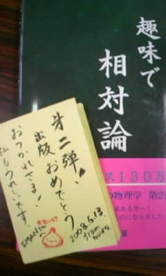

2008年1月1日
今年は、ねずみの置物を作るのは無し。
今日、実家に移動して来てそれどころじゃない。
作りたかったけれど。
2008年1月2日
実家のすぐそばの書店にも私の本が置いてあった。
返本される前に買ってやれ、とか思ったが、
この場に置いてあるのを両親に見せたかったので、そのままにしてきた。
まぁ、買わなくても実家にはすでに初版本が 2 冊余ってるのだ。
しかしこの本、役に立つなぁ。
相対論の記事を書く参考にするのにちょうどいい。
2008年1月7日
仕事始めだ。
仕事をしていて感じたのは、
昨日までの自分こそ、本当の自分だったということだ。
2008年1月22日
論理が暴走しかけている人からのメールや掲示板への書き込みに対して、
ここしばらく自衛の為にも厳しい態度を取るようにしてきたのだが、
あまり気持のいいものではなかった。
少し改めようと思う。
相手が言葉の罠を仕掛けて来たり、
隙を突いて貶めようとして来たり、
自己の主張を徐々に強めてきたりする場合があったので、
こちらとしても予防線を張ったりする癖がついてしまったのだった。
もうこんな疑心暗鬼なやり取りはうんざりだ。
「エスパーかよ！？」と言われるくらい、
相手の言葉の意を汲み取って、それを好意的に翻訳した上で
返答することを目指そうと思う。
それをするためには労力が要るので、
時間的にも精神的にも余裕がないと難しいだろう。
余裕の無い今の社会はおかしいと思うので、
自分は敢えて時代に逆らった行動を取ってやろうといった感じか。
しかし、ストレスを貯めない為に、
今まで以上に思いをストレートに表現しようと思う。
分からん時は分からんと、嫌な時は嫌と、暇が無い時は無いと言う。
ジレンマに陥らないようにしたい。
優しさのつもりで相手に合わせて付き合ってあげた場合、
「上から目線の態度」になってしまうだろう。
どうせレベルに差があればそうなるのは仕方ない。
それを隠さなきゃと考えている自分の態度がすでに上から目線で嫌だし、
それを指摘されるのは癪である。
正月辺りから性格（生き方の方針）がまた少し変わって来たと感じている。
心をオープンに、かつ基本的に人に優しく生きようと思う。
2008年1月24日
書籍の執筆状況について。
初心者がついて来れないかも知れない論理のギャップを
解消するのに苦労していたが、
ようやく一本のストーリーとしてまとまりそうになって来た。
あと2週間もすれば、校正作業だけに集中できるようになるだろうか？
双子のパラドックスやリンドラー座標にも触れようと思っていたが、
すでに詰め込み過ぎの感があるので、諦めた方が良いのかも知れない。
リンドラー座標は目からウロコだったので入れてみたいのだが、
その為にはまだ確認したい事項が残ってるからなぁ。
2008年1月28日
リンドラー座標について、前に計算したメモがたまたま見付かったのに励まされて、
急いで記事を作ってみる事にした。
予定が延びないように何とか時間を捻出しよう。
2008年1月28日
双子のパラドクスは面倒なので今回は一切触れないことにした。
最近、相対論の啓蒙書を幾つか軽く読み流してみるのだが、
双子のパラドクスの話に差し掛かるとなぜか不思議と、
そこで読む気がすっかり失せてしまうのだった。
2008年1月29日
有名な教科書のやり方をあからさまに真似することが避けられそうだ。
これ、自分にとっては結構重要。
2008年1月31日
リンドラー座標について色々と誤解していたようで、小発見が続いている。
調べてみると T_NAKA さんのブログにすでに載っていたりする内容で、
「車輪の再発明」をしているようだ。
（この言葉は否定的ニュアンスで使われる事が多いらしいが、
何から何まで自分の手で作り上げてみたい私にとっては常に肯定的な言葉である。）
人というのは、自分ですでに理解している内容しか目に入らないというのは本当だなぁと思う。
まだ理解していない読者の頭にも入って行けるような文章に仕上げたい。
2008年1月31日
増刷キターー！！
在庫が尽きかけてるので第 4 刷の準備に入ると連絡があった。
去年 5 月頃に「たちまち大増刷」をしたのは本の帯をみて知っていたが、
それから長いこと刷ってなさそうなので、怖くて状況を聞けないでいたのだった。
2008年2月3日
リンドラー座標についてようやく計算が完了。
記事にできる程度に納得が行ったのでホッとした。
妻と息子が早めに寝入ったお陰で、自宅でひとり集中することが出来て、一気に進んだ。
こんなの、仕事の片手間には無理だよ。
堂々と資料を広げたり、計算のメモをあちこち見回すわけにいかんし。
何かあるごとに思考が遮られるのも障害だ。
2008年2月6日
記事を書き終えてみると、大した事なかったな、と思えるんだよな。
多分、私がまだ理解していない遥か先の方を理解している人も
同じ気持ちでいるんだろうな。
信じにくいことだが。
2008年2月7日
「趣味で相対論」の執筆状況。
予定していたコラムの幾つかは（つまらんので）やめる事にした。
残る作業は数えるほどになった。
あとがき（2日）と、以前誤りを指摘された箇所の検算(3日）、
時空図の画像作成（1日）、全ての図のモノクロ調整（2日）、
数式のレイアウト(1週間)、そして校正作業(2週間)。
データ量としては前回とほぼ同じサイズだが、
数式が多いのでページ数は多めになる可能性もあり。
以上、日記を兼ねた業務連絡です。
2008年2月14日
仕事から帰ると何も出来ない。
あのメールにはこんな風に返事したいな、とか、
サイトの記事のあの場所はこう修正すべきだとか、
本の原稿はこんな風にまとめたいとか、
すべてのイメージは頭の中に明確に出来ているのだが、体が動かない。
朝には再び気力がみなぎっているが、仕事に行かねばならぬ時間だ。
ああ、そうそう、
数日前に「IT哀史」とか「SE哀史」とかいう言葉があるのを知って、
そうそう、それだよ、と思った。
2008年2月15日
知識やサービスのコモディティ化かぁ。
物理の教科書なんかもコモディティ化するんだろうな。
2008年2月18日
メールの返事が出来なくて申し訳ない。
親友のメールにさえ応答する気力が無い状態だ。
日中は元気なので、会社からメールを出せるように手を打てばいいのだろうが、
その準備をする気力が夜と朝には湧かない。
（それが出来るくらいなら返事を出した方が早い。）
掲示板には元気に出てくるのに、
メールに返事が来ないのは無視されているのだろうか、と悩まないで欲しい。
頭が痛くなったり、起きてられなくなったり、どうも変な疲れ方をしているようだ。
2008年2月19日
体調が少しだけ治って、いきなり元気が出た。
こんな事書いていると、今度は躁鬱病の心配をされてしまいそうだな。
ひょっとして風邪だったのか、とも思える。
最近家族で風邪をひく事が多く、主症状が精神面に現れることが多い気がする。
歳のせいなのか、最近の病原体の特徴なのか・・・？
2008年2月20日
本の執筆について。
第1章は何度も読み返して、すでにかなりの推敲を入れたのだが、
第2～第5章はまだ色々と手直しが必要だ。
目標を立てて進めないと終わらないな。
1章に4日ずつかけるとしてもあと16日は要る。
2008年2月21日
最近、眠り薬として数学（トポロジー）の本を読んでいる。
この前の連休に妻の実家で法事があったので、
電車移動中の暇つぶしのために、積読本の中から選んだのがきっかけだ。
書評には易しくて初心者でも行けるとか書いてあったけれど、
一日3ページくらいしか読み進められないぞ。
良く眠れる。
2008年2月25日
本の執筆について。
途中うんざりしていたのだが、終わりが見えてきて勢いに乗って来た。
第2章(p.107)までの手直しが完了した。
ここまでに限って言えば、こんなに分かりやすい本はないだろう、という自信作だ。
第3章と第4章は短か目なので時間はかからないだろうが、
第5章、第6章の調整では地獄を見るだろうな。
2008年2月26日
数式で固めた第5、第6章よりも、
物理的な考察が並んでいる第3章の直しの方が厄介な予感。
簡単そうなところから先に取り掛かろう。
章の始まりは奇数ページからという決まりを設けているお陰で、
各章のレイアウトが互いに影響しないで済んでいる。
式を見やすく並べ直すと、いよいよ製品っぽくなって気持ちいいのだが、
少しずつページ数が増えて行っている気がする。
こりゃ、値段があまり上がらないように、出版社に頭下げなきゃなぁ。
印税無くせって？
それだけはご勘弁を。
深夜に起き出して作業してるんですよー。
2008年2月27日
幾つか不満足な点が出てきたなぁ。
「明らかである」とか書いておきながら、
読み返した私にさえ明らかでない部分があったりして、
もっといい説明を考え直さないといけない。
あと、レイアウトの都合上、たった5行削りさえすれば
2ページも詰められるという、かなり余白がもったいない部分があって、
そこはどうしたものやら。
2008年2月29日
大抵のアイデアは、もう自分独自のものではなくなった。
最初からそんなものは無かったのかも知れないが、
ネットで繋がった為に、すぐに気付くようになってしまった。
誰もかもに独創的であることを求めるこの社会は酷ではないか。
2008年2月29日
もはや、天才は一人いればいい・・・のだろうか。
私にはネットというものが、たった一人の巨大な天才に見えてきた。
我々は、その天才が次に何を思い付くのかをただ待っている。
残りの人は何をすればいい？
もう肉体労働しか残されていないのか。
そして肉体労働の機会さえ回ってこないようになったら、どうなるのだ。
ネットには天才の思い付きを表現を変えて語るだけの詩人だらけ。
2008年2月29日
フラット化した世界を生き延びる方法は多くの人が口にし、警告する。
しかし他者より優位に立て、というメッセージでしかない。
フラット化した世界から人類を救う方法はないのだろうか。
2008年3月1日
Oリングテストというのをやってみた。
疑似科学臭いのが嫌で、今まで試してみようともしなかったのだが、会話の流れで何となく。
うん？ 何これ？ 片方の手に触る物によって他方の手の力の入り方が全く変わるぞ。
息子に手を触れてもらうだけで、信じられないほどの怪力が出る。
潜在意識のブレーキ、完全解放だ。 いてて。
2008年3月3日
深夜に妻と大ゲンカした。
ドロドロした話を読む気になる人はリンク先へどうぞ。
私は波動グッズの被験者になることになった。
長期戦になるとは思うが、妻への科学教育をもっと強化しなければと思う。
2008年3月6日
この波動ペンダントの効用について、
妻を調子付かせない為に、不用意な発言をしないように気を付けていた。
例えば、「肩こってないでしょ？」とかの問いかけに対しては「ノーコメント。」である。
しかし、これを身に着けてからすぐになぜか右手首が痛み出した。
「効かねーじゃないか」と皮肉を言うつもりで、ついこのことを口にしてしまったら、
即座に、以前にも同じ事があったことを指摘されてしまった。
そう言われてみれば、レメディを処方された初めの時にも同じ症状が出て、
長く苦しんだのだった。
妻は、これらの事例から何らかの法則を導き出そう（帰納）としている。
やべー。
2008年3月10日
先週は突如降りかかった仕事のトラブルで深夜残業が続いて全く動けなかった。
1週間ぶりに執筆作業再開。
たった5行を何とかして削ろうというレイアウトの問題は解決。
お陰でその周辺の文章は非常に洗練されたものになった。
第3章はかなりの書き直しを始めているが、まぁ何とかなりそう。
5章、6章はレイアウト作業中。
分かりにくい部分に少しずつ手を加えるだけで、かなり良くなっている。
たまに信じられないような誤植がまだ見付かったりする。
あと2週間くらいで仕上げる目標。
2008年3月12日
右手首は相変わらず痛い。
この波動ペンダントを外しさえすればすぐに治る気がするのだが、
波動なんて信じてないので、そんな馬鹿らしい行動は取れない。
2008年3月12日
晩に、怪しい計算をしている箇所を見つけてしまった。
書いた当時の無知がさらけ出されているようなミスだ。
これが今まで指摘されずに放置されてきたということは、他の部分も怖いな。
2008年3月13日
仕事へ行く前のギリギリまで執筆作業をしている。
朝の作業は20分程度しか取れないが、別人かと思えるほど効率がいい。
もしこのまま会社に行かなくていいのなら・・・と思えてしまう。
2008年3月13日
昨晩見つけたミスを正しく直すには、
省略するつもりだった説明を最初の方に入れておく必要がある。
一冊で完結するような本を書くのはなかなか大変だ。
2008年3月14日
会社と家の往復だけで、
誰とも話さないで黙々とPCに向って作業しているだけだと、
いつの間にか世間知らずになってそうで怖いな。
2008年3月14日（夜中）
おお！ 裏ではこんなことが起きていたのか！
やっぱり世間知らずになってたじゃないか。
これで謎が色々と繋がった。（内緒）
2008年3月15日
妻 「そのペンダント貸して。」
私 「ああいいよ、こんなの別に無くたって・・・」
（ペンダントを着けて立ち去る妻、その場にうずくまる私。）
私 「ごふっ、ブルーウォーターの加護を失った私には
もう立ち上がる気力さえ残されては・・・あ、ちょっと待ってよ！」
2008年3月16日
妻 「最近、姿勢良くなったよね？」
私 「お？ おお！？ いや、立場上、ノーコメントだ」
2008年3月16日（深夜）
とうとう最終章までの確認とレイアウト作業を終わらせたぜ・・・もう朝が近いな。
作業は順調、あと1週間で終われそうだ。
残る作業は、第3章の書き直しと、第2章への追加説明と、図のトーン調整と、索引の整備・・・
書き並べるとまだ色々あるもんだな。
2008年3月17日
ニセ科学に対する私なりのアプローチは、「自虐的に遊ぶ」ことだな。
正論では人は動かないものだし、自ら芸人になるしかない。
パオロマッツァリーノ氏の著作「つっこみ力」に展開されていた主張は、
多分こんなことなのではないかな。
「魔方陣グルグル」の原作なんかにも、この思想が現れていて大好きだ。
2008年3月18日
脱稿に向けてラストスパート。
サイトの更新が留守になっていて申し訳ないです。
その事情は本のあとがきにも少しだけ書いておいた。
本当は若い友人たちの就職が決まって
引っ越して行ってしまう前に仕上げて直接渡したかったが、
もう間に合わないだろうな。 諦めて郵送にしよ。
でも待ってくれている人たちの為に急ぐ。
2008年3月20日
春分の日で休みだと言う事は昨日まで気付かなかった。
原稿を書くのに非常にありがたいと思ったのだが、
近所の子供たちが遊びに来て、もう一日中大騒ぎだ。
雨だから外で遊べとも言えない。
しかし近所のお母様方からは大変感謝されることになった。
2008年3月20日（深夜）
集中できずに効率は悪かったものの、何とかデスクに張り付いて完成間際まで来れた。
前作を同じ要領で書き直したく思えてくるほどの出来だ。
売れるかどうかは不安だが、恐らく類書はないであろう。 にやり。
2008年3月21日（夜明け前・睡眠中）
これまでにないほどの長時間の金縛りを体験した。
また悪霊がのしかかって来るかと警戒したが、気配は全くなし。
珍しい。
本当にただの金縛りのようだ。
疲れてんのかな。
今月の初めに、生まれて初めて悪霊を素手で捕まえるという
大胆なことをしたせいかも知れない。
（結局逃げられたけど、めちゃくちゃ気持ち悪かった。
昆虫を触ったときのようなガサッとした感触だなんて意外すぎる。）
2008年3月21日（深夜）
とうとう原稿を仕上げる事が出来た！
最後の最後に疑問にぶつかってしまって慌てたが、無事解決。
あとは索引の整理と全体のチェックをして、
月曜には出版社にデータを送付する予定。
2008年3月24日（夜明け前）
もう身体はボロボロですが、原稿を出版社に送付しました。
これからカバーデザインに入ります。
2008年3月25日
サイトの更新のために、
独自フォーマットのテキストデータを使った記事の管理を導入したいと考えている。
現状では数式と文章を別データとして管理しており、面倒臭い。
数式画像の作成を自動化できればサイト更新や修正の手間も軽減されるだろう。
他にも、現状に不満がある。
- 文中に数式を使うのが面倒だったり、
- 体裁の変更を全体に渡って一斉に行うのが難しかったり、
- 作成時期によってフォントが統一できていなかったり、
- フォントをもっといいのに変えたくても躊躇してしまったり、
- 作業環境が変わるのが怖くて他のPCへ移行できなかったり。
例えば、今の背景色が目に痛いという訴えが寄せられている。
何とか対応してあげたいのではあるが、
画像のアンチエイリアシングを今の背景色に合わせたりしているので、
すぐには変更できないでいる。
多分来月もまだ忙しいだろうから、
こういった環境を整える作業は5月頃から始めることになるだろう。
自分の為にするプログラミングは久々で楽しみだ。
2008年3月26日
メールがガンガン来るようになった。
みんな執筆が終わるの、待っててくれたんだね。
かなり前から溜め込んでいたけれど、片っ端から返事出してる。
順番バラバラ、気の向いた順。
（質問が多いので、答え易いものが優先されてしまう。）
忘れ去られているのがあるかも知れないけれど、ごめん。
2008年3月31日
妻がまた大量のレメディを衝動買いしてるし・・・。
また情緒不安定な雰囲気が出始めているので、
ここで落ち込ませるわけには行かない。
笑って許す方が賢い選択だと考えた。
やはり家計の制度改革は絶対必要だな。
その内、冗談じゃ済まなくなる怖さがある。
他の改革と共に実行する計画であり、その日は近い。
2008年4月2日
右手首の痛みが生活に支障を及ぼすほどになってきたので、
もう細かい事は言ってられない。
身の危険を感じ、「波動ペンダント」を外す事にした。
あちこちの筋や関節が妙に突っ張って違和感がある。
さて、何日で治るかな？
書かないでいたが、
私は他にも実験台にさせられて色々と被害に遭ってるのだ。
やめろと言うのにアロエのスプレーを吹きかけられて腫れ上がってしまったり。
毎日サプリ漬けだし、料理には知らない内に色々混ぜられてるし。
「小娘がぁ、何を食わせた～」状態である。
2008年4月7日
波動ペンダントを外したその夜に右手首の痛みが急に引いてかなり驚いたのだが、
それから数日たった今、やっぱり痛いぞぉー！！
妙な波動のせいだと少しも疑わなくて済むこの心地良さ！
2008年4月8日
掲示板での話が切っ掛けで、
「人工ブラックホールの安全性」の軽い読み物を書き始めたのだが、
気になることが出てきて、調べるほど、簡単には済まなくなってきた。
いや、安全性に不安が出てきたわけじゃなくて、周辺事情について調べている。
2008年4月9日
本の完成が近くなると、「今死ぬわけには行かぬ」という気持ちが強くなって、
自転車通勤中の事故が怖くなる。
もし死んでも出版作業は続行してくれ、と遺言を残しておきたくなるが、
大袈裟っぽいので、出版社には伝えていない。
校正しないまま世に出されるのも嫌なので、やっぱり死ぬわけには行かぬ。
2008年4月10日
統計力学の記事の追加が続いているが、
これは以前に書きためてあったものを使っており、
すぐに追加できそうな記事はあと一つくらいしかない。
それでも時間を掛けて仕上げている。
2008年4月14日
「急に初稿刷りが来たので・・・」と言い訳しようと思ったが、
ちょっと頑張って統計力学の記事を追加。
まだ少し気に入らないところがあるので、こっそり表現を修正するかも知れない。
書籍の校正も済んで、原稿を送り返す。
2008年4月21日
只今、第二校の修正作業中。
表記の揺れが多くて迷惑を掛けてしまっています。
「事」と「こと」とか、「時」と「とき」とか、「無い」と「ない」とか、
「易い」と「やすい」とか、「同士」と「どうし」とか。
気を付けていたつもりなのだけど、チェックが甘かった。
2008年4月25日
忙しいのはもうすぐ終わり、長く続いた空回りの努力も、もうしないで済むようになる。
しかし成果が見え始めるのは、5 月半ば過ぎになるだろうか。
それまで更新頻度が低いままだろうが、
サボっているわけではないので、もう少しお待ち頂きたいと思う。
2008年4月28日
出版社の方で提案して下さるアイデアについて、
私の理想と違うと言ってことごとく反対意見を書き送っているので、
ひょっとして嫌われてはいまいかと心配になる。
まぁ、言う事は言っとかんと後悔したくないし。
それだけプロとして頼りにしてますってことでお赦しを・・・。
只今最終調整中です。
2008年5月4日
今年は田植えの時期が早く、ゴールデンウィーク前に妻と息子だけが実家に帰った。
そのまま帰って来ないので、私はこの数日、完全な休みを得ている。
最初は体調が狂って頭がぼーっとしたり、寝ても数時間ごとに目が覚めたり、
昼夜の区別がなくなったりしたが、次第に、非常に研ぎ澄まされた感覚が戻ってきた。
何年ぶりだろう。
欲しかったのはこれなのだ。
2008年5月10日
人生、思ったようにはうまく行かないもんだなぁ。
まぁ色々と。
行動に問題があったという「責め」は感じていないので心配は要らないだろうが、
どこかすっきりしない。
2008年5月11日
やりたくても出来なかったことに幾つか手を出し始めている。
余裕のあるときにやれば数時間で出来てしまうのだなぁ。
余裕のないときには何時間あっても足りないと感じていたのに。
2008年5月12日
トラブル発生だが、想定内だ。
心の中の警戒信号の正体はこれだったのだな。
こういう時は良い方に転ぶ気がして楽しみだ。
（追記：引越し先の大家さんの都合で契約をキャンセルされたこと。）
2008年5月14日
出版社とのやり取りはまだ続いている。
いや、今日、ほとんど終わった。
今月中か、来月初めくらいには出せるかも知れない。
2008年5月19日
前からやりたかった「数式画像作成の自動化」によるサイト構築について、
基本的な試験はうまくいった。
うまくいったので、もう少し技術的に凝ったことをしたくなって来た。
いや、今のところデザイン的にはあまり変える予定はない。
しかし記事の修正はかなり楽になるだろう。
これからはテキストデータを管理するだけでいい。
2008年5月20日
隠しておいても仕方ない。
今月初めに仕事を辞めたのだ。
しかし技術者を辞めたわけではない。
今までいた会社からは仕事をもらうし、新しい仕事も始める。
かっこ良く言えば独立したことになるわけだが、予定したほどスムーズではない。
私の実家の近くに引っ越そうとしている。
しかし色々としがらみがあって
すぐに移動するわけにも行かず、宙ぶらりんの日々である。
一部の荷物はすでに「やる気満々」で移動してしまい、
行動が制限される結果となっている。
「暇な方の友人たち」が頻繁に遊びにくるようになった。
「俺は遊んでる場合じゃないんだ」と焦る気持ちはあるが、
引っ越しが完了するまでの間はどうせ大して動けないんだし、
何もかも忘れて気楽に思いっ切り付き合ったらいいのかも知れない。
2008年5月22日
「サイト作成の自動化」システムの機能を拡充している内に、はっと気付く。
これは latex2html の再発明に過ぎないのではないだろうか！？
とりあえずまだ試運転だが、これを使って
電磁気学の一部を自動生成してみた。
なかなか良いだろう？
2008年5月23日
トラブルはもう心配の外へ過ぎ去った。
予定外のところへ着地したわけだが、
禍い転じて福となった結果なのかはまだ判断できない。
2008年5月25日
引っ越し前に人と会う約束は「ほとんど」果たせた。
これでようやく移動に専念できる。
しかしこれだけの荷物が、借りてきたトラックに積めるのかどうか、非常に心配だ。
妻は「大丈夫、大丈夫！」と一日で運び終える気でいる。
子供の面倒や、
彼女自身が疲れ果てて不機嫌になる事は計算に入れていないらしい。
2008年5月26日
友人たちの助けにより、大荷物はトラックに積み終えることができた。
しかし一度では無理だとはっきり分かったので、無理に詰めるのをやめた。
約 120 km を往復。
高速道路では積荷がばらけないかちょっと不安だった。
2008年5月26日（夜）
残りの荷物を部屋の外へ出し、殺風景な部屋で寝た。
長く暮らしたこの町ともお別れ。
愛する近所の悪ガキどもに会えなくなるのを淋しく感じ始めた。
2008年5月27日
残りの荷物はトラックに何とかギリギリ収まった。
今日から新居へ。
何とか寝る場所確保。
2008年5月28日
部屋の整理。
各種手続き。
新オフィス準備。
2008年6月2日
新方式導入によるサイトの整備。
電磁気学のページから始めていっている。
今日はやっと第 2 部の最初の方まで進んだ。
これが意外に手間がかかる。
目立たぬ作業だが、電磁気学には今でもかなりの需要があるので、無駄ではあるまい。
数式は以前よりかなり見やすくなることだろう。
2008年6月3日
出版社から連絡があり、新刊の製本が無事進んでいるそうである。
明日には私の手元にも見本刷り（要するに、初期ロットのこと）が届く予定。
明日には搬出が始まるそうだが、前回のスケジュールと比較して考えると、
書店に並び始めるのは 8 日 (Sun) 頃だろうと推測している。
2008年6月4日
本「趣味で相対論」が届いた！！
おやまぁ、そうしちゃったかー。
出来れば色々なところを前の本に合わせて欲しかったなぁ。
まぁ、前作との関連は余りないようにしてあるから、別の本だと考えればいいか。
単独では何の問題もない。
紙の質が前と違っているのは、最近の紙の値上がりの影響で、
同じ選択ができなかったのだろう。
この辺りは好みの問題だから、どっちがいいとは言えまい。
値段が前より少し高いのは、ページ数がそれだけ増えているから妥当なところだろう。
かなりがんばっている設定だな。
あとは、中身で勝負、ってことになるが、ああ、どうなるだろう？
2008年6月9日
「趣味で相対論」は一部のネット書店では購入可能になっているのだが、
まだ本格的には出回っていないようである。
どうなっているんだろう、と思っていたら連絡が入った。
取次ぎの方で搬出が遅れたらしい。
というわけで、店頭に並ぶのは明日くらいからだそうだ。
2008年6月10日
amazon では昨日から予約可能になったが、発売日は 11 日となっていた。
明日だ。
「出る出る詐欺」みたいになってきたな。
まぁ、こんなこともあろうかと、本には正式な発売日として 1 週間くらい先の
日付（今回は 6 月 16 日）が記されているものである。
これ豆知識な。
2008年6月11日
アマゾン、販売開始直後から在庫切れか。
前の本の時もスタートダッシュがすごかったせいで、
まだ表紙イメージの無い内に、amazon からメールでの宣伝が来ちゃったもんな。
あれはみすぼらしくて、やめてくれ、と思った。
今回は気を使って販売前にはリンクを張らずにきたけれど、やっぱりこのザマだよ。
2008年6月12日
早く寝ても遅く寝ても、朝は早くに目が覚める。
ストレスは感じてないのだが、妻からは「起きるたびにやつれるねぇ」と言われる。
原因不明。
充実しているし、出勤が楽しいのだがなぁ。
一日が過ぎるのがとにかく早い。
やりたいことは多いが、まだ手が付けられないでいる。
雑務を早く片付けて仕事環境を整えたい。
2008年6月13日
ねじばなさんから頂きました。

2008年6月16日
アマゾンは以前に比べて容易に在庫切れにならないようになった。
システムが改善したのか、前ほど売れていないせいなのか気になる。
全体ランキングの数字を見る限りでは好調に思えるのだが、
ジャンル分けをしてくれていないせいで、どこのランキングにも食い込めない。
何か手応えがほしいなぁ。
それと、なぜか「趣味で物理学」の読者レビューが全て消えてしまっている。
アマゾンには良くある謎の現象なのだが、これはさびしい。
2008年6月19日
何とか時間を作って、サイトの整備を進めている。
前から色々と気になる部分があって、
それを放ったままで新しい記事を追加する気分になれなかったのだ。
この作業が終われば、また進めそうな気がしている。
いや、すでに気分的にはかなり軽くなってきている。
2008年6月25日
「お願い事」を書き直した。
時々面倒なことが起こるので、分かりやすくしたつもり。
条件も少しゆるくした。
・・・いや、本当は元からこういう意味だったんだけど、説明が良くなかった。
2008年7月1日
小難しい本がやたら売れているなぁ。
ベストセラーだからというので買っておいた本を読み始めたが、
私には全く読み進むことができないものだった。
知的なことに関心のある人は、私が思っているより、ずっとずっと多いのだろう。
そういう人がどこにいるのか全然見えないが。
取り残されてる気分だな。
2008年7月2日
情報は色々と手に入るが、
それについて自分の口で他人にうまく説明できなくなっている。
ただの情報のパイプになっているばかりで、中身はからっぽ。
自分の中に何も残らないのだ。
自分が馬鹿になっているという危機感と焦りがある。
2008年7月8日
名言集なんかをパラパラとめくってみた。
一瞬、そういう心境が訪れたらしい・・・。
でもおかしいじゃないか。
ある名言がある。
人を励ます名言だ。
だが、それを真っ向から否定する名言もある。
それもまた人を励ます。
名言なんてものは正しいわけじゃない。
その人の生き方とセットになってるわけだ。
片っ端に信じるものじゃないな。
2008年7月22日
もう一度、空へ！
（久しぶりに浪漫飛行のCDが出てきたので・・・）
2008年7月24日
2 週間以上にわたる知の探索が報われようとしている。
もうすぐ発表できる記事を読めば、
一体何について悩んでおったのかと・・・分からないだろうなぁ。
こんな単純な内容のどこにつまづく必要があったのだろうと、自分でも思う。
（追記：ハミルトン・ヤコビ方程式の意味を深く勘繰り過ぎて悩んでいた。
あと、一階偏微分方程式の標準形以外の解法が見つけられなかった。）
2008年7月26日
うーん、ふりだしに戻る、ってやつだな。
（追記：偏微分方程式の解の一意性について悩む。
物理は放っておいて、偏微分方程式の研究でも始めた方がいいだろうかと本気で苦しんだ。）
2008年7月29日
やっと少し前に進めたのに、一難去ってまた一難。
この進みの遅さ、嫌になるなぁ。
こんな日記ばかりが続くのも鬱陶しい。
（追記：積分不変量の導出の前提に何かありそうで悩む。
なぜなら、変数が定数になるように正準変換した時には積分が 0 になって
どうみても不変量にはなっていないから。）
2008年7月30日
なんとまぁ、「なっとくする」シリーズに救われるとは。
都築卓司先生、ありがとう。
（追記：積分不変量は母関数が時間を含む場合には成り立っていないってことだった。
他の教科書には書いてないぞ！
いや、書いてあるが、「t は一定として扱う」なんて一言がなぜそこに小さく
断り書きしてあるか、まったく意味不明で悩む原因になっていた。）
2008年8月4日
面白い話につながるだろうと思って一連の記事の完成を急いできたが、
大して実りのないことを知った、この裏切られ感。
一気にやる気が萎えてしまったが、
この辺の事情をうまく伝えることができれば、価値が出るかもな。
2008年8月7日
お盆の混雑を避けて、早めに妻の実家へ移動。
2008年8月8日
海へ行ってきた。
土日は混むからな。
久々に（十年以上ぶり？）泳いだし、かなり日焼けした。
2008年8月9日
息子対策はどうしたら良いのだろう。
子供にゲーム機を買い与える親の気持ちが分からなくも無い。
ノート PC を持ち込んで仕事しているのだが、集中できやしない。
「遊ぼー！？」「それ、いつまでやってんのさー」「ねぇ、見て見て！」の連続攻撃。
まぁ、自分も子供の頃、同じことをやった覚えがある。
2008年8月18日
妻の実家で稲刈りを手伝ってきた。
時期は少し早いのだが、兼業農家であるため、今日以外に予定が空いてないのだ。
初めて動作中のコンバインを間近に見た。
これは人類の知恵の結晶だな。
2008年8月19日
大雨の中、里帰りから戻ってきた。
残りの田んぼの稲刈りの予定はずっと先に延びるだろう。
2008年8月20日
Amazon の書評は見ていないフリをしてきたのだが、今回は書いておこう。
本日、「趣味で物理学」で最高評価をしてくれていた 3 名の投稿が消えた。
Amazon のバグのためか、
数ヶ月前からそれら 3 件のコメントだけが表示されない状態が続いていたのだが、
これでとうとう、最高評価の投稿自体が一切無かったことになってしまったわけだ。
それらのコメントは私の PC 内に大切にコピーしてある。
投稿して下さった方々には本当に感謝している。
そしてそれらに同意票を入れて下さっていた沢山の方にも本当にありがとうと言いたい。
2008年8月23日
最近、新しい記事が増えていかないのは、
物理の内容に深く悩んでいたり、落ち込んだりしているせいではなくて、
問題演習に没頭しているからである。
応用計算は学生時代にかなり疎かにしてきたという自覚があるので、
ちょっとやり直して自信を付けたいし、100 マス計算よりも脳に良さそうだ。
学生の時よりもサクサク進めるので飽きないし、実際、色々な事が分かって面白い。
記事の追加の方は・・・、私がこれに少し飽きるまで待っていてほしい。
2008年8月25日
最近の我が掲示板のカオティックな有り様には危機感を覚えている。
放っておくとトンデモの温床となりかねない。
あまり関わりたくない類の議論ばかりだが、管理人として事態の収拾を図らねばならぬだろう。
時間を割いて勉強してでも、議論をまとめる役目を引き受ける必要がありそうだ。
とは言うものの、私の生活だって楽じゃないのよ。
2008年9月1日
最近、耳栓を愛用している。
昔から私は、周囲のあらゆる状況に気を配る性質があって、
（まぁ、悪く言えば集中力がないということだが、）
耳栓をすることで驚きのパフォーマンスを実現できることに気付いたわけだ。
数年前になってやっとこの事実に気付いたのだが、
これまでの仕事の性質上、使うわけにはいかなかった。
もともと情報を自ら塞いでしまうのが嫌で、長いこと耳栓を嫌っていたのだった。
2008年9月3日
こっそり熱力学のページの整備を進めている。
直すべき部分は色々あるのに気付いてはいるが、
とりあえずはデータの管理を新方式に統一するのが主目的だ。
表現の悪さによる変な誤解が減るように少しの変更は加えている。
2008年9月8日
問題演習への熱は少し収まってきたが、
今度は「論理パズル（ゲーデル的なやつ）」に主力を注いでいる。
時間を費やし、解きながら、色々と思う。
パズルというのは出題者は問題を売って儲けることが出来るが、
解答者にとっては、単なる楽しみ、暇つぶし、悪く言えば、時間の無駄。
しかし応用を考えない物理や、特に数学について言えば、
「あれこれ考えて旨く行く方法を見つけ出す」という点で、
まるで同じことなのではないだろうか。
問題の解き方を効率よく身に着けるのが勉強で、
解き方をあれこれ考えるのはパズルだという区別があるだろうか？
どちらも大切だと思うのだが、後者はやはり道楽である。
気を悪くする人がいると思うのでわざわざ付け加えておこう。
しかしスポンサーがつけば、それは仕事になる。
2008年9月11日
私が器用に生きてるだなんて、ははーん、っと笑っちゃう話だが、
中には誤解して嫉妬心を向けてくる人もいるようなので
書いておいた方がいいと感じ始めた。
まず、私が著書の印税で食っていけてるだなんて有り得ない話だ。
「今のところ」それはない。
どれだけ売れないといけないか、自分で考えてみればいい。
そうすれば有能な人が軽い本を多量に書かなくてはならない理由も分かるだろう。
あと、事業がうまく行ってるなんて事もない。
税務署に登録なんて行くんじゃなかったと思ってるくらいだ。
多分、年末には書類手続きに泣くことになるだろう。
役所の書類はどうしてこんなに面倒なんだ。
しかし呑気に暮らしているのは認めよう。
お陰で子供に勉強を教えたり、一緒に遊んだり出来る。
季節の匂いも感じる事が出来るようになった。
今まで自分で必死こいて貯めた金を放出して一年や二年、好きな生き方をして何が悪い。
海外ではよくあるスタイルだ。
まぁ、それでも活動限界はゲインを利用しても精々二年だな。
若者は私を見て元気を出すといい。
「少年よ、がんばるなかれ」だ。
将来？ 知るか？ 君らだって分からんだろうに。
ご心配なく、生命保険くらいはちゃんと入っとるよ。
2008年9月12日
質のいい情報を選ぶのが難しくなってきたなぁ。
2008年9月12日
LHC の実験について、
ブラックホールの事を本気で心配している人たちが割りと多くいるのを見ていると、
滑稽を通り越して哀れみさえ感じる。
マスコミが面白がって中途半端な情報を流しているのだから仕方がない。
マスコミの圧倒的なパワーを前にして、自分の非力さを感じる。
すでに正しい情報はネット上で幾らでも見つける事ができるのだから、
私がさらに何かを書いて出してみたところで、大した足しになるとも思えない。
誰もがそこにリンクを張りたくなるくらいの
よっぽど面白い事を書くことができなければ・・・。
そうでなければ、似たような情報の一つとして埋もれるだけだ。
やっぱり僕もタイヤキなのかな・・・？ と思う事もある。
そんな事を言うと、
「当たり前だろ、自分を何様だと思ってるんだ！」と怒る人と、
「何弱気な事を言ってるの！ 信じて進みなさい！」と怒る人がいる。
どちらの言い分も分かるが、後者だけに耳を貸す事にする。
2008年9月13日（深夜）
LHC とブラックホールの記事を慌てて書いて仕上げたのだが、
アップする段になって、以前に同じようなのを途中までかなり書いていたのを発見した。
いや、今回の方がよっぽどいい出来だ。
もったいないが、前のは隠しとく。
2008年9月14日
リンク張って紹介した以上、自分も内容を知っておかないとまずいかな、と、
水木しげるの「がんばるなかれ」って本を注文して手に入れた。
おやまぁ、なかなか今の自分にぴったりで愉快じゃないか、これ。
2008年9月15日
長らくの間、他の人からの評価を気にしたり、
「誰かがすでにどこかで語ってる事だから」とか、
「誰でもいずれは知ることだろう」とか、
そんな理由で、言いたい事も言わずにおとなしくしていたのだが、
お構いなしに好きな事を発信しようという気になった。
2008年9月16日
あー、ほらほら。
なんだか、生命保険も入ってれば安心とは行かないようじゃないか。
今のところ自分のは関係ないようだけれど？
2008年9月18日
また世の中が分からなくなってきたな。
まるで世界が終わるかのように苦しんでいる人がいるかと思えば、
そんな問題はまるで何も無いかのように余裕で笑い飛ばす人もいる。
どちらも本当に思えて、私の狭い知識では判断できない。
もっと勉強しなくちゃ。
そもそも情報源が偏ってるのかな。
2008年9月19日
アマゾンで「趣味で相対論」のレビューを初めに書いて下さった方には
大変、申し訳ないと思っている。
大人げない悪ふざけには全くうんざりしている。
これについて放置しているのは怠惰というものだろう。
すでに私に可能な範囲での行動は取った。
結果待ち。
2008年9月20日
好きな事を続けるとき、一番の敵は罪悪感だ。
こんな楽しい事ばかりしていて大丈夫だろうかと不安になり、
他の事に手を出して、結局は無駄な事に時間を使う事になる。
2008年9月21日
知り合いのところの中学生が物理好きになったと聞いて、嬉しくなった。
あの本を書いた甲斐があったというものだ。
2008年9月22日
まぁ、物理にはあてはまらないと思うが、
「10 冊読めば専門家」なんて分野もあるそうなので、真似してチャレンジしている。
しかし理学書を丁寧に 10 冊読むのはつらいな。
眠気に誘う本が多いのである。
私の本も同じように思いながら苦労して読んでいる人がいるのかな・・・。
2008年9月23日
少し前から、相対論のページの整備を静かに進めている。
こうしてみると意外に沢山の記事を書き連ねて来たものだ。
この全てを一週間やそこらで終わらせようというのは骨の折れる作業だ。
でもこれが終われば、あとは量子力学の整備を終わらせるだけで一段落つくのである。
早くすっきりさせたい。
見た目をキレイに整えて読み易くすると、今度は説明の不備が目に留まり易くなる。
私も色々とまずい点があるのには気付いているのだ。
単行本の方にはかなり手を加えて改善してあるが、
サイトの方は放ったらかしだったのを思い出したりする。
こういう作業をしていると、単行本の方ではちゃんと直しただろうかとか、
あそこはこう書いておけば良かったなぁ・・・次の版で修正してもらおうか、
などと気になってしまうのである。
2008年9月24日
理学系の入門書というのは、専門家が書いたものであっても間違いや不整合が実に多い。
初心者の気持ちになってじっくり読んで行くと、
その部分のつじつまをその後のどこでどう解決するつもりなのかが気になって、
一気に読み進めなくなる。 （現在、それで苦労している。）
一方、玄人たちはそういう軽い本を飛ばし読みできる。
細かな部分は自分で脳内補完しながら読めるからだ。
だからそういうミスがあるのに気付かないか、
たとえ気付いたとしても些細な事だと思えてしまえる。
私の書いた本も、そういう理由で厳しい目から救われているのであろう。
玄人たちにとっては易しい入門書というのは、どれも似たり寄ったりに見えるものだ。
そういう気持ちも理解できる。
私にとって中学の参考書なんてどれを選んでも大差ないと思えるのと同じだ。
2008年9月25日
なぜ今、教科書を何冊も読み直しているかというと、
世に出ている入門書が大体どの範囲をカバーしているかという調査と、
私が根本的に誤った理解をしたまま、気付いていないことがあるのではないかという
初心に返ってのチェックの為である。
2008年9月26日
掲示板で数式を扱えるようにする気持ちに火がついた。
遊びに使うつもりだった古いマシンに Linux を入れてサーバにする作業を開始。
レンタルサーバを試すために、昨日わずかなお金を支払ったが
私の目的には使えないことが分かったので、
ここで諦めてはもったいないという気になったのだろう。
あと、能力が無くて出来ないからやらないってんじゃないんだぞ、というプライド。
2008年9月26日
近所の書店に、わしの本が二つとも再入荷していたぞ。
少し元気回復。
2008年9月28日
数式支援サーバが立ち上がったぞ。
自慢したいが、セキュリティの理由から、あまり見せびらかすわけにも行かぬ。
ごく親しい友人限定で公開。
2008年9月29日
掲示板で数式が使えるように、改造開始。
他人のコードを読むのは苦手な私です。
perl なんてのはほとんど触った事ないし。
2008年9月29日
現在のサイトの容量が制限に近付いていることに気付いた。
何でこんなに膨れ上がってるんだ？
慌てて整理を始める。
前の仕事を続けていたらこんなことをする余裕はなかっただろう。
2008年9月29日
数式掲示板をレンタルして、収入の足しに出来んかなぁ。
需要は幾らかありそうだが、儲けよりも気苦労の方が多いんだろうなぁ。
2008年9月29日
今日は書きたい気分なのだ。
私が巡回しているブログやサイトの多くが、更新頻度を落としてきている。
「どうせみんな書いてることだし、俺がわざわざ書かなくても」シンドロームが
蔓延しているように思う。
2008年9月30日
もう一つ、前から書きたいと思っていた事。
仕事をやめて、頭の中をからっぽにするまで 3 ヶ月くらいかかった。
やりたいと思いながら抑えていたことをやりまくって、それにも飽きてきた頃、
ようやく、色んな能力や本来の興味が回復してくる。
バケーションという制度は日本にも必要だと思う。
2008年10月3日
掲示板で数式が使えるようになった。
kafuka さんの挑発に乗せられて実現したわけだが、結果としては良かったと思う。
作ってて楽しかったし。
2008年10月7日
数式エディタを追加した。
本当は過去ログや管理人機能の方も改造しなきゃいけないんだがな。
それにしても、今回改造使用させてもらった BrEdiMa は開発が停止しているようで残念だ。
もう一歩進めば、大きく化けたのだろうがな。
苦労の割りに見返りが少ないのだろうから仕方ない。
良くここまで作ったと思う。
（TeX に特化して、軽量化して、作り直してみたい気もするが、私にも生活があるでな。）
2008年10月10日
今回の解説記事は、TeX の数式表記が「事実上の標準」であることを強調して、
掲示板で数式を使ってもらえるように誘導しようという魂胆です。
2008年10月13日
アマゾン、予想通りの結果になったな。 悪い意味で。
（追記：悪戯の本体は削除されたものの、その傷跡が残ったままになっているので、
経緯を知らない人には全くわけの分からない、誤解を生む状態になってしまっていること。）
2008年10月13日
LaTeX の作図機能を使って掲示板に図を貼り付けるテストをしてみた。
うまくいったのだが、追加パッケージなしでこれを使おうという強者は多分いないだろうなぁ。
本当は見せたかったけど、ニフティのサーバも重くなっているようなので、
この機能は外しておいた方がいいだろう。
掲示板を全て自前のサーバ上に持って来て動かすという手もあるが、
データが消えるリスクを考えると踏み切れない。
2008年10月17日
掲示板の古い記事が自動で過去ログに回される機能を排除して、手動で出来るように改造した。
他に幾つかの管理人機能の強化を計画していたが、その必要も薄れてきた。
操作がシンプルになったお陰で、凝った手出しをしなくても済みそうだからだ。
（返信のつもりで新規投稿をしてしまったり、別スレに投稿してしまった記事を、
あるべき場所に移動させる機能などを計画していた。）
これで掲示板の改造もひと段落だ。
2008年10月19日
統計力学について、学生の頃に買った本だけで何とかしようと頑張ってきたが、ギブアップ。
アマゾンの書評をのぞいてみたら、これらが他よりも難解で不親切なものだったと判明。
どうやらもっとずっと分かり易い本が私の卒業後に多数出ているようだ。
思い切って 3 冊注文。（これまで一冊で満足できたためしなどないのだから。）
2008年10月21日
統計力学の教科書が届いた。
なるほど、比べ物にならないくらい読み進めやすい。
それでもやはり「お前もか！」と言いたくなる部分があって、安心した。
丁寧すぎて眠くなるのだ。
厳密さを追求するために本題になかなかたどり着けないという意味の丁寧さだ。
あまりに分かり易いものがすでに出回っていたら
私が記事を書く意味がなくなるだろうという心配をしていたのだった。
2008年10月22日
教科書を読むと眠くなる。
自分は本当は物理が好きじゃないんじゃないかと不安になるくらい眠くなる。
この退屈な説明の中に楽しさを見出せるくらいじゃなきゃいけないのだろうか。
2008年10月23日
何だか馬鹿なニュースが多くて、それを「馬鹿だなぁ」と嘲笑っている間に、
本当に知らなくちゃいけないことから目を逸らされている気がして、
いつか自分も馬鹿になってしまう予感がする。
質の高い情報を集めて早口で伝えてくれる安価なサービスはないものだろうか。
テレビは上辺しか語らず、視聴者を馬鹿だと思っているのか、
時間いっぱいにまで引き伸ばして薄めて説明するものだから、トロくて見てられない。
2008年10月27日
寝転がりながら計算できるように「NASAの宇宙でも書けるボールペン」を購入しようかとずっと迷っていたのだが、
国内メーカーも数年前から加圧式のボールペン（三菱鉛筆 パワータンク）を売り出していることを知った。
何と、200 円くらいで買えるのか！
アマゾンで送料無料の 1500 円に満たない時に調整するのにちょうどいいな。
それと「内視鏡付き耳掻き」も、しばらく前から狙っているのだが、最上位機種はまだ高いな。
2008年11月3日
近頃、統計力学の夢を見る。
構想が出来ていて、早く続きを書きたくて仕方がない。
だが、書き始めると色々と確認すべきことが出てきて進まない。
2008年11月4日
税務署から決算関係の書類が届いた。
面倒だが、しばらくこっちをやらないといけない。
2008年11月11日
統計力学のある式について、自分はある解釈を信じてきた。
今回自分でそれを導いて、その意味を考え直してみたが、その解釈はおかしいと思う。
しかし幾つかの教科書に、そのような解釈で説明してあるのを見た覚えがある。
だからこそ、割と鵜呑みで信じてきたのだった。
さあ、犯人探しの始まりだ。
その説明の真意を確認しないと。
2008年11月12日
犯人探しの続き。
うーん、面倒な作業だ。
改めて見直すと、何だかその部分についてぼかして書いてある教科書が多い。
正しい定義を天下り的に持ってきて、それと中途半端に比較することで、
いかにも関連があるかのように見せかけていたりする。
ある教科書は残念ながらごまかしに失敗しており、結果的にうそが書いてある。
私としては納得のいく説明法を見出さねばならない。
2008年11月14日
半年ほど前にはアクセス数が減少傾向にあったので、長いこと気にしないようにしてきた。
最近、ふと気がつくと、アクセス数は、最盛期の 2 倍近くになっている。
掲示板が盛り上がっているせいだろうか。
次の記事に期待してくれているせいだとしたら、待たせて申し訳ないと思う。
2008年11月26日
主人公や世界観にあこがれて繰り返し同じ本を読んだりテレビゲームをすることがなくなった。
そういう意味では年取ってきてるよなぁ。
2008年12月9日
統計力学の話の流れの関係で、情報理論の専門書が必要になった。
図書館に行ったが、唯一関係していそうな本は貸し出されていて、他にはなかった。
それで物理学者が書いた、エントロピーについての古い読み物本を 3 冊くらい読んだのだが、
意外なことに、どれも情報エントロピーと熱力学エントロピーを
積極的に同一視する立場だったので少し驚いたし、嬉しかった。
私の手元にある教科書はその点で消極的である。
統計力学の教科書だから情報理論にまでページを割けないという事情もあるだろうが。
2008年12月12日
軽々しく情報理論に首を突っ込んだが、事情を知るほどに厄介な問題だと気付き始めた。
基礎である情報量の定義さえ、大抵の（専門書でない）本では
それをいきなり定義として受け入れるところから始まるが、
その背景はそう簡単な問題ではなさそうだ。
さて、通販で専門書を何冊買ったら、その記述をしているものに巡り会えるだろうか。
2008年12月15日
情報エントロピーと熱力学エントロピーを同一視することに反対している人というのは
トンデモさんなのではないだろうか、という疑いが時々よぎる。
参考のためにも、もう少しまともな意見を読んでみたいのだが。
（難しい言い回しばかりで論点がはっきりしないのは勘弁よ。 そういうのがよくあるんだ。）
「トンデモさん」は言い過ぎだとしても、漠然と反対、だとか、
用語の濫用に不安を感じる、だとかいうレベルの意見ばかり目に付く。
（その気持ちは分かる。）
理解不足、情報不足によって反対しているように見える。
2008年12月16日
ちょっと遠いところにある図書館の閉架に、
情報理論の教科書が幾つも眠っているのを見つけて 8 冊借りてきた。
司書さんには「どれも古い本ですよ？」と怪訝な顔をされたけど、
科学の基礎はそう簡単に古くなりはしない。
これだけの本を比べ読みするというのは贅沢なもので、謎が一気に溶け落ちた。
不適切な説明をしている教科書もその中に混じっている、ということも今は分かる。
ネットに転がっている初心者向け解説なんぞ、・・・私を散々悩ませやがって・・・糞食らえだ。（自虐的言及）
2008年12月17日
情報エントロピーと熱力学エントロピーを同一視するかどうかの問題の面倒な部分は、
何となくだが色々と見えてきた。
良く理解している人でさえ、言葉の濫用への不安から反対していたりするようだ。
私としては、反対意見に理解を示して濫用を戒めつつ、自分の意見を述べるようにしよう。
2008年12月18日
情報エントロピーについての記事を仕上げたが、
思ったほど面白い結論には至らず、がっかりだ。
楽しいオチになるように、もう少し考えてみる。
2008年12月25日
明日から妻の実家へ出かける。
ノート PC も古くなってきて、データ消失のリスクが高くなってきたので、
今回は持って行かない。
代わりに数学書を何冊か持って行ってじっくり読むつもり。
2008年12月28日
妻の実家では恒例の餅つき。 私は初参加。
途中で抜け出したけれど。
大量に作るので、一日仕事なのである。
|